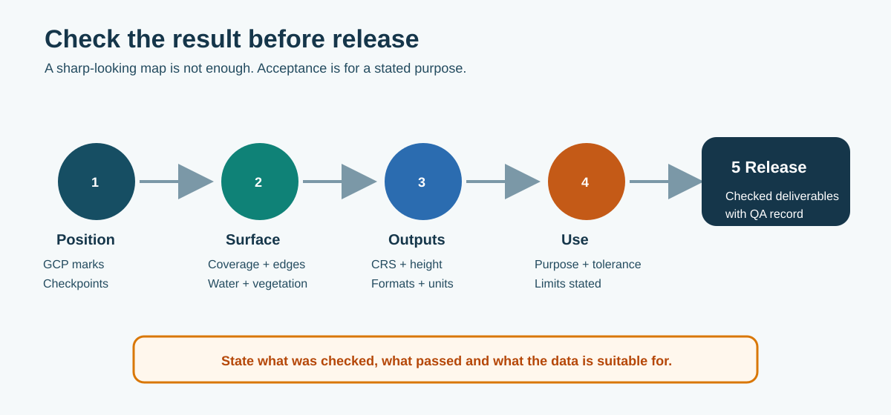

11. QA, acceptance and Civil 3D handover
11.1 Accept the result for a stated purpose

Figure 25. A sharp-looking map is not enough: check positioning, surface behaviour, outputs and the intended use before release.
- coverage includes the required work and edges;
- images are sharp and reconstruction has no unexplained holes, doubles or severe warping;
- water, vegetation, moving plant and shadows are not treated as reliable ground;
- CRS, vertical datum, units, pixel size and file formats are correct;
- GCP marks and residuals are reviewed and exclusions are explained;
- independent checkpoint results meet the project tolerance;
- DEM/DSM and classification are suitable for the intended analysis;
- contours, differences and volumes have been visually and numerically checked;
- outputs open correctly in the intended GIS, CAD or viewer; and
- limitations and permitted use are written down.
The project must define an accuracy tolerance suited to the decision. Avoid unsupported labels such as “survey grade” or “centimetre accurate”. State what was checked, the checkpoint result and what the data is suitable for.
| Output class | Appropriate statement |
|---|---|
| Visual/context | Inspection, communication or progress record; no engineering-accuracy claim. |
| Engineering planning/monitoring | Checked surface or mapping suitable for the stated planning, monitoring or comparison purpose. |
| Quantities, as-built or contractual | Requires an approved tolerance, independent checks, processing record and appropriate engineering/survey acceptance. |
| Cadastral or legally certified survey | Outside this manual unless completed under the separate professional and legal framework. |
11.2 Checkpoint record
| Point | Surveyed E / N / Z | Modelled E / N / Z | ΔE / ΔN / ΔZ | Pass / investigate |
|---|---|---|---|---|
| CHK-01 | ||||
| CHK-02 | ||||
| CHK-03 |
Plain-language acceptance example:
Accepted for: construction progress mapping and comparison at the stated scale.
Checked against: three independent checkpoints in NZTM2000 / NZVD2016.
Limitations: standing water and dense vegetation are not reliable ground; the shaded northern edge has reduced image quality.
Retain the checkpoint CSV, Terra PDF and final ArcGIS surface check with the output. The QA/metadata record should include the Survey ID, purpose/date, pilot, aircraft/payload, mission name, software/firmware versions where available, source and output files, coordinate/height systems, RTK method/FIX status, control and checkpoint IDs, GSD or point density, residuals/RMSE, stable-ground check, exclusions, processing choices, accepted use, limitations, reviewer and report location.
11.3 Worked example — stopbank stripping
Proposed project example only — not an approved universal BOPRC tolerance. The project engineer or survey lead must confirm the purpose, checks and values before capture.
Purpose: compare the pre-construction bare-earth surface with the post-stripping surface across the defined works, establishment and access footprint; map stripped area and calculate an indicative volume.
Method: repeat the controlled M350/L2 mission in NZTM2000/NZVD2016; use comparable ground classification, the same analysis boundary and distributed RTK-rover checkpoints withheld from processing.
Illustrative achieved result: horizontal RMSE = 0.04 m; vertical RMSE = 0.025 m; stable-area mean difference = 0.01 m; no unexplained outlier.
Illustrative project tolerance: horizontal RMSE ≤ 0.05 m and vertical RMSE ≤ 0.03 m, with separate maximum-residual or detection limits set by the project. Confirm these figures through site validation before adopting them.
Accepted for: construction planning/progress, mapped stripping extent and indicative volume where the project engineer accepts the method.
Not automatically accepted for: cadastral work, final crest/formation compliance or contractual payment certification. These may require rover, total-station, level or other approved survey observations.
Limitations: exclude vegetation, standing water, moving plant and low-confidence edges. Change smaller than the approved combined uncertainty is recorded as no reliable change.
11.4 Civil 3D handover
Agree the required deliverable with the designer before export. Do not hand over every available file by default.
| Deliverable | Typical handover | Civil 3D use |
|---|---|---|
| DEM | GeoTIFF or ESRI grid with coordinate information | Create or add a grid surface from DEM. |
| Contours | Checked 3D polylines/feature export or agreed CAD format | Add as surface contour data where appropriate. |
| Point cloud | Classified LAS/LAZ or agreed converted point-cloud format | Use the supported point-cloud/surface workflow for the installed Civil 3D version. |
| Surface | LandXML where the workflow and surface type support it | Create/reference a TIN surface and apply boundaries/breaklines as required. |
Autodesk Civil 3D can create a grid surface from GeoTIFF, ESRI Arc Grid and supported DEM formats. Confirm the drawing coordinate system, units, vertical datum, boundary and grid spacing before use. The designer must review triangles, contours, boundaries and any breaklines before design or quantities.
Retain the raw source, Terra project, GIS processing history, QA record and released deliverables together. If a later correction changes a released surface, issue it as a controlled revision and tell the project team.